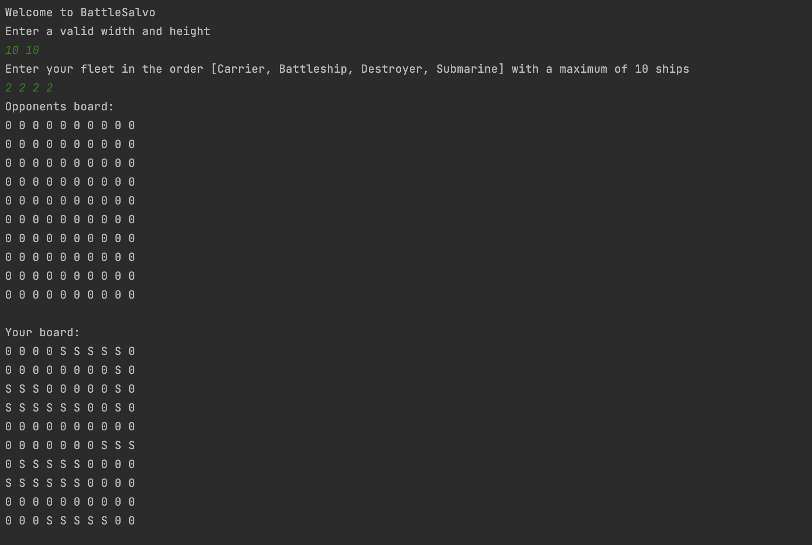

Srijith Gomattam
Student at Northeastern University
Welcome to my website! I am Srijith Gomattam, a second-year student at Northeastern University, pursuing a combined major in Computer Science and Business Administration. Alongside my deep understanding of object-oriented and front-end algorithms, I possess a diverse skill set that includes proficiency in accounting, marketing, and economics.
One of my key strengths is the ability to quickly pick up new programming languages, which allows me to adapt and excel in diverse technical environments. My passion for technology drives me to stay updated with the latest trends and advancements in the industry, while my knowledge of business principles enables me to approach challenges with a well-rounded perspective.
As you continue scrolling on this website, you will come across my previous work, whether that may be academic or musical. I am always open to connecting with fellow professionals, industry experts, and students who share similar passions and interests. Feel free to reach out if you'd like to discuss tech trends, collaborate on projects, or explore new opportunities!
Featured Projects

Quiz Me!
This Python project allows you to take quizzes stored in XML files, answer multiple-choice or true or false questions, time how long it takes to complete the quiz, and even review and redo wrong questions. You can also view your results at the end of the quiz.
View project
Weekly Planner Application
Created an application that offers a streamlined interface to create, edit, and manage events and tasks for the week. Further capabilities include the ability to customize categories, save and load pre-existing weeks, and seamlessly navigate via keyboard shortcuts. The weekly planner also provides a detailed view of each task, a weekly overview, and the ability to choose a preferred week start day.
View project
BattleSalvo
BattleSalvo is a Java rendition of BattleShip which is played through the terminal. The project utilizes JSONs for data storage and includes proxies to communicate with a server. Additionally, the game features an AI class that employs machine learning algorithms to make intelligent decisions and provide a challenging opponent for the player.
View projectWork Experience
Intern
iStart Valley
Jun 2021 - Nov 2021
- Conducted 3 months of market research and employed LeanStack and other entrepreneurial frameworks to develop a prototype design and 30+ slide pitch presentation on PowerPoint.
- Collaborated with a team of 20+ individuals and led a team of 5 individuals to pitch a viable business concept to a panel of industry experts.
Senior Instructor
Kumon
Jun 2019 - Apr 2020
- Instructed students elementary-level English and mathematics.
- Evaluated and provided feedback on homework and classwork.
- Managed inventory using Microsoft Excel
- Organized seasonal events
Education
Northeastern University - Boston, MA
Candidate for BS in Computer Science and Business Administration (GPA: 3.87/4.0)
Awards
- Dean's List Fall 2022
- Dean's List Spring 2023
Relevant Coursework
- Object Oriented Design
- Discrete Structures
- Microeconomics
- Management Information Systems
- Macroeconomics
- Financial Accouting
- Marketing
Activities
- Finnovate at Northeastern
- Northeastern Data Club
- Northeastern University Marketing Association (NUMA)
- Oasis
Grafton High Schol - Grafton, MA
(GPA: 4.53/4.0, SAT: 1580)Awards
- High Honor Roll (All 8 Semesters)
- 2022 President's Education Award
- STEAM Competency Distinction with Honors
- Bronze Presidential Service Award
- Silver Presidential Service Award
- Grafton High School Engineering Award
- National Honors Society Merit Scholarship
- DECA Second Place State Finalist
- DECA First Place Regional Winner
Activiites
- Grafton High School Math Team
- Defense Wise Kempo Karate Black Belt
- Grafton High School Science Fair
- Grafton High School Jazz Workshop (piano)
- Grafton High School Pit Band (piano)
- Grafton High School Varsity Tennis Team
- Indian Carnatc Musician
- Indian Culutral Event emcee
- ToastMasters Public Speaking Club (Vice President @ Grafton Chapter)